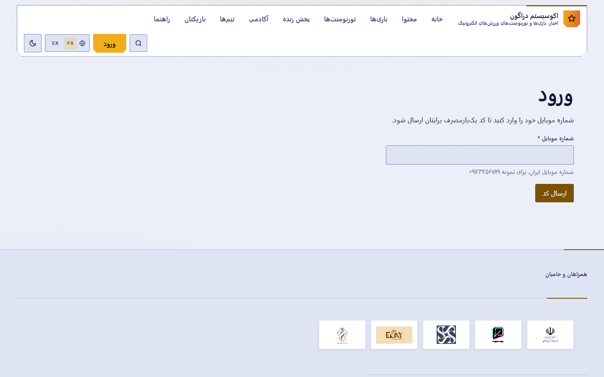
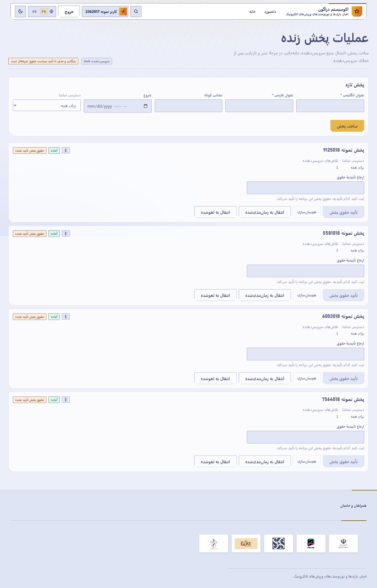

هر بخش به فصل متناظر در راهنمای جامع (dragon-complete-guide-fa) ارجاع میدهد.
npm install
npm run docker:up
npm run migrate
npm run buildبرای ساخت فایل محیط محلی، 06-CREATE-LOCAL-ENV.cmd را اجرا کنید. هیچ مقدار محرمانه واقعی را در مخزن قرار ندهید.

شکل 1 — ورود با شماره موبایل و رمز یکبارمصرف.
۱. /{locale}/auth/mobile ۲. شماره موبایل → «دریافت کد» ۳. کد → تأیید ۴. تکمیل پروفایل در نخستین ورود
۱. به /{locale}/account بروید. ۲. کارتهای بخش مدیریت را ببینید: هر کارت یعنی مجوز متناظرش را دارید. ۳. اگر هیچ کارتی نیست، حساب شما هیچ مجوز مدیریتی ندارد.
نکته کلیدی: نبود کارت تقریباً همیشه یعنی نبود مجوز، نه خرابی.
در نسخه فعلی هیچ رابط کاربری برای تخصیص نقش وجود ندارد.
THIRD_PARTY_SETUP_FA.md.نقش را بر پایه کمترین دسترسی لازم انتخاب کنید:
| هدف عملیاتی | نقش | مجوز |
|---|---|---|
| ساخت و انتشار دوره | education_manager | education.manage |
| عملیات پخش زنده | streaming_operator | stream.manage |
| تعدیل گفتوگوی زنده | live_chat_moderator | chat.moderate |
| مدیریت تورنمنت | tournament_administrator | tournament.manage |
| فروشگاه و سفارش | shop_operator | store.manage |
| پشتیبانی و عملیات | support_operator | support.manage |
| مالی (آغازکننده) | finance_operator | finance.manage |
| مالی (تأییدکننده) | financial_approver | finance.approve |
نقش: tournament_administrator یا tournament_organizer · مجوز: tournament.manage پیشنیاز: یک بازی منتشرشده
۱. /{locale}/admin/tournaments ۲. تورنمنت جدید: بازی، عنوان و خلاصه دوزبانه، ظرفیت، حالت تأیید، بازه ثبتنام و برگزاری ۳. قوانین دوزبانه ۴. انتقال به وضعیت منتشرشده
نقش: education_manager · مجوز: education.manage
گزینه دورهها دیده نمیشود
→ بررسی نقش و education.manage
→ در صورت نبود مجوز، ارجاع به اپراتور فنی
→ پس از تخصیص نقش، بررسی مسیر /{locale}/admin/courses
→ ساخت draft
→ انتقال draft به review
→ تکمیل coach، خلاصه فارسی و انگلیسی، حداقل یک درس و یک درس الزامی
→ انتشار از reviewپیشنیازهای انتشار: خلاصه فارسی، خلاصه انگلیسی، مربی تأییدشده، حداقل یک درس، حداقل یک درس الزامی.
نقش: streaming_operator · مجوز: stream.manage

شکل 2 — کنسول عملیات پخش زنده.
حساس واقعیت این نسخه:
stub است — یک شبیهسازی قطعی، نه پخش واقعی؛STREAMING_PROVIDER=arvan عمداً رد میشود و راهاندازی را متوقف میکند؛نقش: live_chat_moderator · مجوز: chat.moderate · مسیر: /{locale}/admin/chat
این نقش نمیتواند حساب را تعلیق کند. اختیارش محدود به اتاقهای تخصیصیافته است.
نقش: shop_operator · مجوز: store.manage · مسیر: /{locale}/admin/store
این نقش به دفتر کل و پرداخت جایزه دسترسی ندارد.
/{locale}/account/wallet/{locale}/admin/finance (finance.manage)finance.approve — کنترل دوگانه، یک نفر نمیتواند هر دو نقش را روی یک اقدامپرریسک داشته باشد.
| مسیر | مجوز |
|---|---|
/{locale}/admin | admin.access |
/{locale}/admin/users | users.read |
/{locale}/admin/audit | audit.read |
/{locale}/admin/operations | support.manage |
/{locale}/admin/configuration | config.read |
| # | نشانه | علت | راهحل |
|---|---|---|---|
| ۱ | کارت مدیریتی نیست | نبود مجوز | درخواست نقش از اپراتور فنی |
| ۲ | «دسترسی مجاز نیست» | نبود مجوز | همان |
| ۳ | نقش داده شد ولی کارت نیامد | کش پروب مجوز | خروج و ورود دوباره |
| ۴ | draft منتشر نمیشود | چرخه | ابتدا review |
| ۵ | انتشار دوره رد میشود | پیشنیاز ناقص | مربی تأییدشده، خلاصه دوزبانه، درس الزامی |
| ۶ | «دوره پولی» غیرفعال | OD-015 | دوره رایگان |
| ۷ | پخش واقعی دیده نمیشود | ارائهدهنده stub | OD-013 |
| ۸ | آرشیو پخش کار نمیکند | OD-014 | — |
| ۹ | سرور با arvan بالا نمیآید | رد عمدی | STREAMING_PROVIDER=stub |
| ۱۰ | ثبتنام پولی تورنمنت نیست | OD-007 | تورنمنت رایگان |
| ۱۱ | تسویه سبد فیزیکی رد میشود | OD-019 | کالای دیجیتال |
| ۱۲ | مسدودکردن کاربر نیست | OD-017 | وجود ندارد |
| ۱۳ | اعتراض به تعدیل نیست | OD-024 | وجود ندارد |
| ۱۴ | ایمیل نمیرسد | آداپتور ندارد (OD-003) | — |
| ۱۵ | اعلان فوری نمیرسد | OD-027 | — |
| ۱۶ | کد ورود نمیرسد | محدودیت نرخ | صبر تا پایان پنجره |
| ۱۷ | برداشت نقدی نیست | وجود ندارد | — |
| ۱۸ | ساعت مسابقه اشتباه است | ذخیره UTC، نمایش محلی | منطقه زمانی دستگاه |
| ۱۹ | بازی در فهرست تورنمنت نیست | منتشر نشده | ابتدا بازی را منتشر کنید |
| ۲۰ | صفحه خالی است | نبود داده | «خالی» با «عدم دسترسی» فرق دارد |
| تصمیم باز | متغیر محیطی | وضعیت پیشفرض |
|---|---|---|
| OD-014 | STREAM_RIGHTS_POLICY_APPROVED | بسته (fail-closed) |
| OD-007 | PAID_TOURNAMENTS_ENABLED | بسته (fail-closed) |
| OD-015 | PAID_COURSES_ENABLED | بسته (fail-closed) |
| OD-017 | SOCIAL_BLOCKING_ENABLED | بسته (fail-closed) |
| OD-024 | MODERATION_APPEALS_ENABLED | بسته (fail-closed) |
| OD-027 | PUSH_NOTIFICATIONS_ENABLED | بسته (fail-closed) |
| OD-019 | PHYSICAL_FULFILLMENT_ENABLED | بسته (fail-closed) |
| OD-020 | ENTITLEMENT_REVOCATION_ENABLED | بسته (fail-closed) |
| OD-008 | NOTIFICATIONS_SMS_ENABLED | بسته (fail-closed) |
| OD-026 | ANALYTICS_EXTERNAL_ENABLED | بسته (fail-closed) |
| ارائهدهنده | وضعیت |
|---|---|
| MongoDB | یکپارچهسازی واقعی |
| Kavenegar | یکپارچهسازی واقعی |
| GitHub Actions | یکپارچهسازی واقعی |
| پرداخت | شبیهسازی |
| ایمیل | شبیهسازی |
| پخش زنده | شبیهسازی؛ آروان رد میشود |
| ذخیرهسازی شیء / CDN | آداپتور ندارد |
| Push | آداپتور ندارد |
| تحلیل خارجی | مسیر ارسال ندارد |